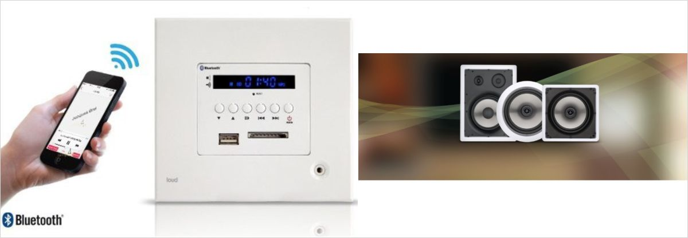
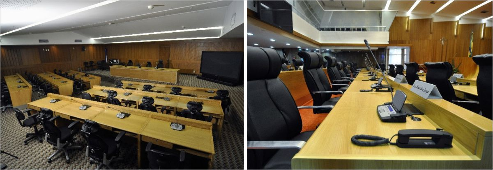
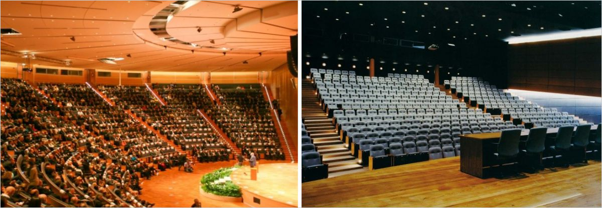
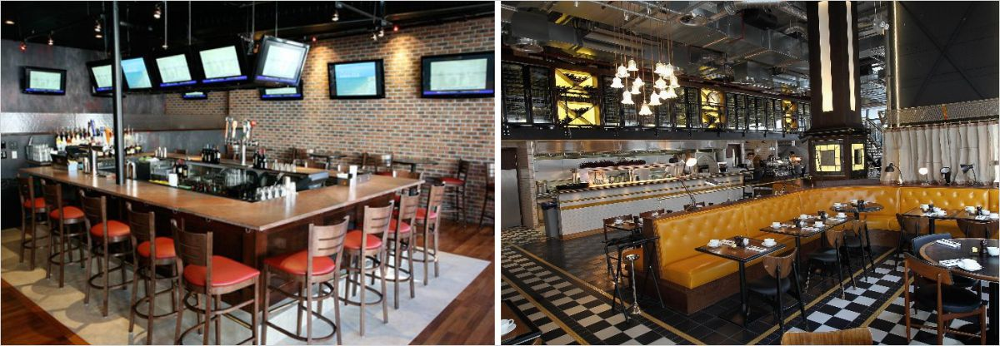
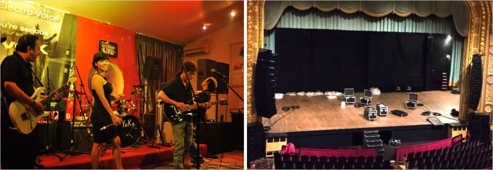
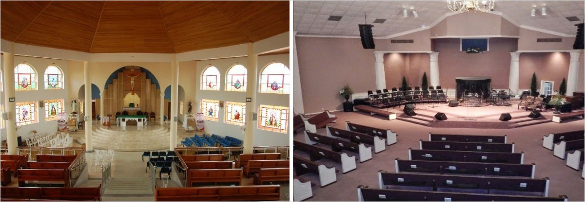
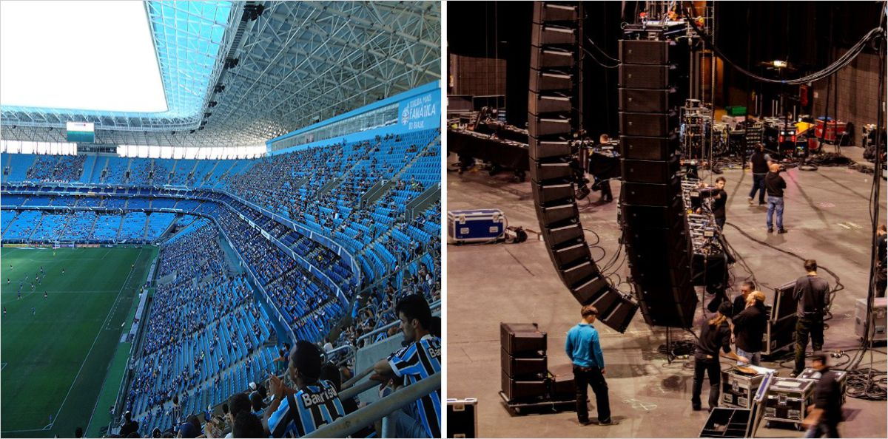

SONORIZAÇÃO
Existem uma infinidade de equipamentos, dispositivos, potências e qualidade de Sistema de Sonorização. O grande desafio é optar pelo melhor sistema que atenda as reais necessidades do Cliente com o melhor custo/benefício. Esta é a nossa missão...
COMÉRCIO:
● Academias ● Consultórios ● Clinicas ● Centros de Estética ● Lojas ● Farmácias ● Conveniências ● Padarias ● Bares e Restaurantes

CORPORATIVO:
● Edifícios Corporativos e Comerciais ● Centros Comerciais ● Hotéis ● Supermercados e Atacadistas ●Shopping Centers ● Indústrias
● Centros de Distribuição e Logística ● Lojas de Departamento ●Terminais Rodoviário, Ferroviários, Fluviais, Metro, Aeroportos

MÚSICA AMBIENTE, AVISOS / CHAMADAS, EVACUAÇÃO / EMERGÊNCIA, RÁDIO CORPORATIVA, INFORMAÇÕES:
O Sistema de Sonorização em edificações com acesso de grande número de pessoas, se faz necessário por questões de segurança, utilidade pública, operacionais e comerciais.
Nossa experiência de mais de 30 anos em projetos, especificações, venda e implantação de Sistemas de Sonorização, com aplicação de equipamentos profissionais com linhas de áudio em 70 / 100 Volts de fabricação nacional ou importados, traz para os nossos clientes as soluções mais adequadas e eficientes.
CONVENÇÕES, ENSINO E GOVERNO:
● Plenários ● Auditórios ● Museus ● Escolas ● Centro de Convenções ● Centro de Exposições

Elaboramos projetos exclusivos para plenários onde o sistema de liberação dos microfones fica nas mãos do presidente da sessão, desta forma ele com um simples toque autoriza ou não os demais participantes a discursar; em plenários a principal característica do sistema de sonorização é a "inteligibilidade", todos tem que compreender perfeitamente o que está sendo dito, os microfones e demais equipamentos que compõem o projeto eletroacústico devem ser equilibrados e permitir perfeita integração, com sistema de votação e de presença.
São complexos os estudos para se obter uma boa performance em sistema de sonorização em grandes ambientes e locais que receba um número grande de pessoas. Para isso contamos com o apoio de engenheiros e corpo técnico dos maiores fabricantes globais de equipamentos de áudio & vídeo.

ENTRETENIMENTO:
● Teatros ● Boates ● Bares ● Restaurantes ● Igrejas e Templos Religiosos ● Casas se Shows ● Arenas Esportivas ● Grandes Eventos

Ambientes que requer estudo adequado na distribuição do sistema de sonorização, para que o áudio seja agradável em nível de volume, inteligível e de boa qualidade, onde se perceba todas as frequências bem distribuídas, assim como os quadros nas paredes, o cardápio e a decoração das mesas, a música também pode dizer algo sobre o seu restaurante, sobre a comida, sobre o cheff e inclusive sobre o proprietário. Som ambiente em restaurantes e bares é uma tendência mundial.

Em Projetos destinados a teatros e casas de shows o sistema de sonorização e de vídeo projeção são muito importantes, e merecem atenção especial, porém, a parte mais delicada do projeto passa a sero condicionamento acústico (tratamento e isolamento).
O projeto eletroacústico de um teatro deve ser minuciosamente calculado, o “tr” (tempo de reverberação) deve ser calculado com precisão, todos os acabamentos passam a ter importância na composição do ambiente acústico, proporcionando um espaço agradável e com ótima inteligibilidade, contamos com especialistas nessa área.
Outro cuidado necessário é escolher adequadamente os equipamentos que serão utilizados e isso varia de acordo com a necessidade de cada teatro ou auditório e de sua finalidade de uso. Por exemplo, se além das apresentações culturais, o ambiente também for utilizado para palestras e outros eventos, vale priorizar a instalação de telas interativas ou videowall, projetor, câmeras de transmissão, microfones e etc.

Vivemos na era da comunicação, entretanto, às vezes descuida-se de coisas básicas e fundamentais para uma boa comunicação, a adequada sonorização das Igrejas e Templos Religiosos para se obter uma comunicação efetiva; não adianta ser bom pregador se a palavra chega distorcida ou inaudível ao ouvido do fiel, a comunicação exige boa compreensão, e uma palavra mal-ouvida pode ser mal interpretada.
Em vez de ser considerado luxo, um som de boa qualidade é veículo indispensável à transmissão da palavra. Hoje em dia, é comum encontrar paróquias utilizando equipamentos inadequados por descuido ou por desconhecimento da especificidade da tecnologia acústica necessária a uma boa instalação, deixando o fiel incomodado pelos ruídos de microfonia ou até mesmo com dificuldade de ouvir pelo excesso do som, bem como pela ininteligibilidade da palavra, a ponto de sair da igreja com a sensação de que não ouviu nada.
Contamos com profissionais capacitados para diagnosticar a melhor aplicação de equipamentos de sonorização em Igrejas e Templos Religiosos, são muitas instalações realizadas em todo o Brasil. Os estudos vão desde a capacidade elétrica do local e sua adequação, melhoramento acústico com algumas intervenções e a instalação definitiva do sistema de sonorização.

Nossa experiência em Arenas Esportivas:
- Arena Grêmio - Porto Alegre
- Maracanã – Rio de Janeiro
- Itaipava Arena Fonte Nova – Salvador
- Itaipava Arena Pernambuco – Recife
- Arena das Dunas – Natal
- Arena da Baixada – Curitiba
- Novo Parque Aquático Rio 2016